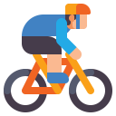

Christopher Hamilton

211
18/05/1995 – Australia
El Team Picnic PostNL participa en el ciclismo profesional. En este proyecto se recoge información del equipo, de sus corredores y de su participación en La Vuelta 2026.

211
18/05/1995 – Australia
212
28/03/1999 – Países Bajos
213
04/07/1999 – Italia
214
23/10/1999 – Países Bajos
215
21/11/2004 – Colombia
216
02/04/2005 – Reino Unido
217
12/12/2002 – Francia
218
11/01/1993 – Países Bajos